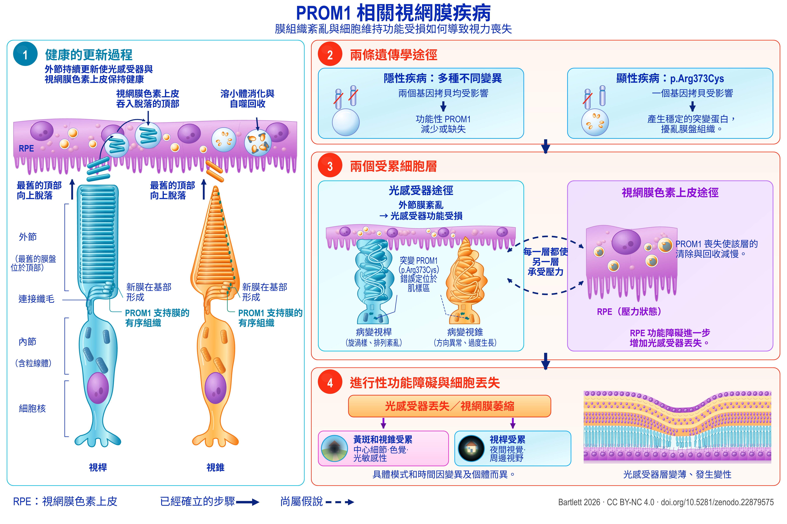

Review
PROM1 相關視網膜變性
基於等位基因差異的機制、干預與研究重點證據圖譜
English title: PROM1-associated retinal degeneration
Working paper, version 1.90, 21 September 2026.
The Zenodo record also holds an accessible HTML edition, a spoken-text version, a description of the figure and an audiobook.
Abstract
PROM1 相關視網膜變性包括顯性遺傳性黃斑病變,以及隱性遺傳、通常累及範圍更廣的光感受器變性。兩者不同的遺傳模式和臨床表現,提出了不同的機制問題與治療問題。本篇文獻回顧與證據圖譜整合了臨床遺傳學、自然史、膜生物學、光感受器和視網膜色素上皮(RPE)模型、臨床前干預,以及註明日期的人體研究記錄。最有力的轉化進展是在 PROM1 缺陷實驗系統中實現了挽救,已在患者來源的類器官和基因敲除小鼠中得到展示。一項已獲取全文的小鼠研究及另一項獨立的會議摘要均報告了發病後治療的獲益。尚未解決的主要外推問題是顯性突變性疾病,其中基因增補、突變體抑制及聯合治療需要直接比較。機制研究並不限於外節形態發生:直接針對 RPE 的實驗提示自噬通量及外節清除參與其中,而光敏感敲除模型則涉及內皮素、類胰島素生長因子1(IGF1)和代謝壓力。這些通路需要按細胞區室分別解釋。人體定量自體螢光結果限制了將雙類視黃醇(bisretinoids)普遍過量作為統一解釋的可能;其他視網膜疾病基因型中內皮素的局部保護作用,也不支持將該通路一概視為有害。臨床終點也相應分層:顯性疾病的萎縮區擴大、隱性疾病的橢圓體帶縮短,以及光學同調斷層掃描(OCT)所測得的特定層變薄,反映的是不同過程,且具有不同的地板效應。明確列出或採用較寬泛遺傳學入組條件的人體研究可能接納 PROM1 疾病患者,但對其中大多數研究而言,記錄說明的是誰可以入組,而非誰實際入組或入組後的結果。本文提出七項實驗研究計劃,將上述區分轉化為可檢驗的比較,並分別說明具有決定性的對比、解釋結果所需的解釋保障,以及能夠據此解決的決策問題。由此形成的框架按等位基因、細胞區室和疾病階段區分候選治療。


Description of the figure
PROM1 相關視網膜疾病。基於當前認識構建的疾病工作模型：外節更新及其受干擾的機制（1、2）、兩個受累細胞區室（3），以及隨之出現的視覺喪失（4）。虛線表示尚屬假說、而非已經確立的環節。各要素的證據見第3至10節。
分圖1：健康的更新過程。一個視桿光感受器和一個視錐光感受器並列位於視網膜色素上皮下方。每個細胞由上至下標注為：外節，最舊的膜盤位於頂部；連接纖毛；含有粒線體的內節；以及細胞核。新膜在各外節基部形成，PROM1 支持膜的有序組織；最舊的頂部則向上脫落。視網膜色素上皮吞入這些脫落的頂部，並通過溶小體消化和自噬回收將其分解。
分圖2：兩條遺傳學途徑。左側為隱性疾病：多種不同變異，兩個基因拷貝均受影響，導致功能性 PROM1 減少或缺失。右側為顯性疾病 p.Arg373Cys：一個基因拷貝受影響，由其產生穩定的突變蛋白，擾亂膜盤組織。
分圖3：兩個受累細胞層。左側為光感受器途徑：外節膜紊亂導致光感受器功能受損。病變視桿畫成旋渦樣、排列紊亂，病變視錐則方向異常並過度生長；突變 PROM1 p.Arg373Cys 錯誤定位於肌樣區。右側為視網膜色素上皮途徑：PROM1 喪失使這一層的清除與回收減慢，圖中顯示其處於壓力狀態，RPE 功能障礙進一步增加光感受器丟失。兩個框之間有彎曲虛線箭頭，標注“每一層都使另一層承受壓力”；虛線表示該關係尚屬假說，而非已經確立。
分圖4：進行性功能障礙與細胞丟失。隨後出現光感受器丟失和視網膜萎縮，分為兩條後果：黃斑和視錐受累，影響中心細節、色覺和光敏感性；視桿受累，影響夜間視覺和周邊視野。具體模式和時間因變異及個體而異。旁邊的橫斷面顯示光感受器層變薄、發生變性。
圖例。實線箭頭表示已經確立的步驟；虛線及虛線箭頭表示尚屬假說的內容。
Download the figure (PNG, 5400 × 3600 pixels, CC BY-NC 4.0)
How to cite
Bartlett C. PROM1 相關視網膜變性：基於等位基因差異的機制、干預與研究重點證據圖譜. Version 1.90. Zenodo, 21 September 2026. https://doi.org/10.5281/zenodo.22879575